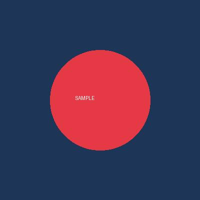

Task 1: mobile-first cards
This card stacks on phones.
This card sits beside card one on wider screens.
Task 2: responsive image

Task 3: responsive text
Make the window wider than 600px and the heading becomes larger.